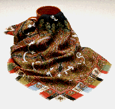

The Minneapolis Institute of Arts
Main Menu ~ Services and Resources ~ Museum Shop ~ Catalogs ~ Gifts ~ Postcards ~ Posters ~ Slides ~ Video Tapes
Patchwork Shawl Scarf
 22k
Reproduction of an Indian shawl from Kashmir in the Institute's textile collection. Wool challis, 36 inches square. $45